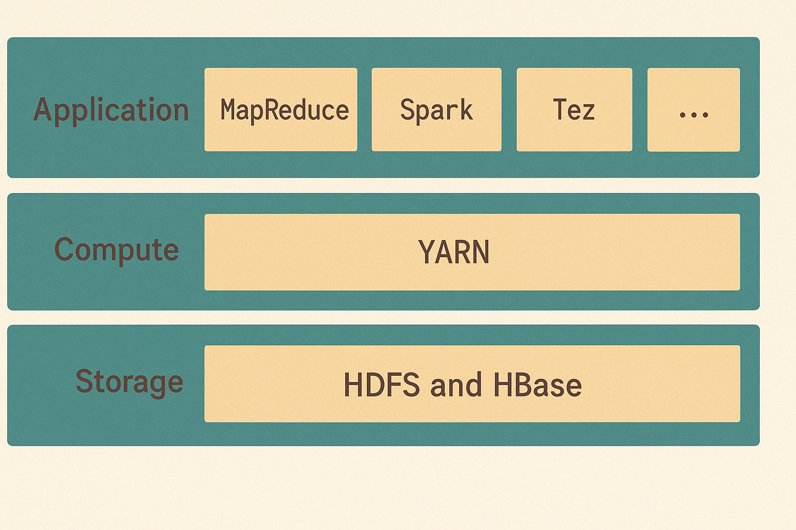
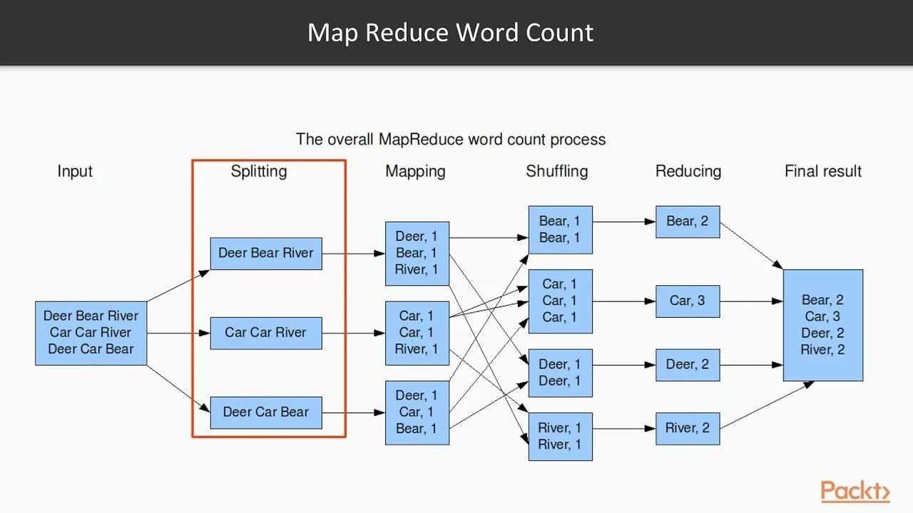
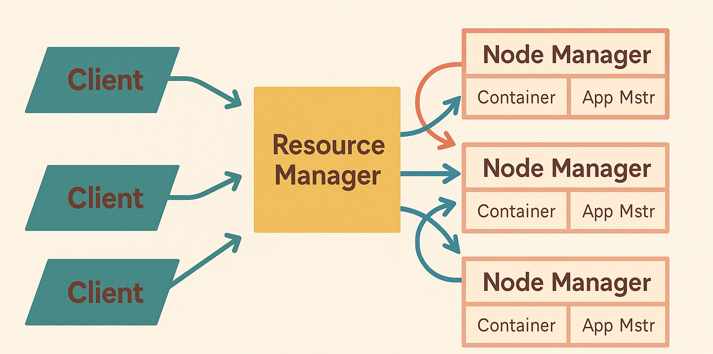

Index
Куратор раздела

Подвальный Артем, Data Engineer/Data Scientist
Хочешь перейти в дата-инженерию, но не знаешь с чего начать? Пиши - составим резюме, продумаем твое развитие https://t.me/ampodvalniy
Хочешь улучшить текущий раздел, внести недостающее или поправить формулировку? Предлагай PR и тегай @Artemlin6231
Немного об этой главе
Экосистема hadoop разворачивается в большей части компаний при работе с BigData и знание её компонентов также важно как и самого HDFS.
Приятного изучения)
Компоненты экосистемы Hadoop

HDFS (Hadoop Distributed File System)
Распределённая файловая система, обеспечивающая надёжное и масштабируемое хранение больших объёмов данных на кластере из обычных серверов.
YARN (Yet Another Resource Negotiator)
Слой управления ресурсами и планирования заданий. Позволяет эффективно распределять ресурсы между различными приложениями, такими как MapReduce, Spark, Tez и другими.
MapReduce и Spark
Движки для распределённой обработки данных: - MapReduce — классическая модель обработки больших данных. - Spark — более современный, быстрый и гибкий фреймворк для распределённых вычислений в памяти.
Дополнительные инструменты
- Hive — SQL-подобный интерфейс для анализа данных в Hadoop.
- Pig — язык потоков данных, простой в использовании для анализа.
- HBase — распределённая колонко-ориентированная база данных.
- Oozie — планировщик рабочих процессов (workflow scheduler).
- ZooKeeper — служба координации и управления распределёнными приложениями.
MapReduce
Зачем нужен MapReduce?
В условиях стремительного роста объёмов информации традиционные методы обработки данных перестали справляться с поставленными задачами. Компании столкнулись с необходимостью обрабатывать терабайты и даже петабайты данных ежедневно. Именно в ответ на этот вызов и появился MapReduce — революционный подход, ставший фундаментом для распределённых вычислений в рамках экосистемы Hadoop.
Как работает MapReduce?

MapReduce — это способ обработки больших объёмов данных за счёт разбиения задачи на мелкие подзадачи, которые параллельно обрабатываются на разных машинах в кластере.
Этапы обработки:
- Input
На вход подаётся большой массив данных: текст, логи, последовательности ДНК и т.д. - Splitting
Данные делятся на фрагменты, которые обрабатываются независимо. - Mapping
Каждый фрагмент проходит через функциюmap, которая превращает данные в пары «ключ — значение». - Shuffling
Все одинаковые ключи группируются: - Reducing
К каждой группе применяется функцияreduce, которая агрегирует значения. - Result
Формирование окончательного результата
Что было до YARN?
До появления YARN, архитектура Hadoop в версии 1.x была построена вокруг модели, в которой система обработки данных была тесно связана с системой управления ресурсами. Центральную роль в этой архитектуре играл компонент под названием JobTracker, а на каждом узле кластера работал агент TaskTracker.
JobTracker размещался на одном выделенном узле и выполнял сразу несколько функций: принимал задания от клиентов (в формате MapReduce), разбивал их на задачи, распределял задачи между узлами, контролировал выполнение и восстанавливал задачи при сбоях. Таким образом, он одновременно был и координатором выполнения, и диспетчером ресурсов, что со временем приводило к чрезмерной нагрузке на него — особенно в крупных кластерах.
TaskTracker, в свою очередь, запускался на каждом рабочем узле и исполнял задачи, полученные от JobTracker. Он периодически отправлял отчёты о статусе выполнения задач. При этом каждый TaskTracker имел фиксированное число слотов для map и reduce задач (например, по два каждого типа). Такая статическая настройка означала, что если задачи одного типа отсутствовали, то ресурсы слота простаивали, что снижало эффективность использования кластера.
К тому же, масштабируемость была сильно ограничена: JobTracker хранил в оперативной памяти всю информацию обо всех заданиях и задачах в кластере. При большом числе заданий он становился узким местом, начинал "захлёбываться" и мог выйти из строя. Поскольку он был единственной точкой отказа, его сбой останавливал всю работу кластера.
Что такое YARN?
В ответ на эти архитектурные ограничения в версии Hadoop 2.x появилась новая система управления ресурсами — YARN (Yet Another Resource Negotiator). Она стала кардинальной реформой, позволившей отделить управление ресурсами от логики выполнения приложений, что обеспечило гибкость, отказоустойчивость и расширяемость всей экосистемы Hadoop.
Благодаря YARN, Hadoop больше не ограничен только MapReduce-программами — теперь на одном кластере могут параллельно работать Spark, Hive, Tez, Flink и многие другие фреймворки. Это позволило превратить Hadoop из специализированного инструмента в универсальную платформу для обработки больших данных.

Архитектура YARN в Hadoop 2.x
Для решения проблем предыдущей версии в Hadoop 2.x была представлена новая архитектура — YARN (Yet Another Resource Negotiator). Она стала ключевым компонентом, кардинально изменившим подход к управлению ресурсами в распределённой среде.
Основная идея YARN — разделить управление ресурсами и выполнение приложений, тем самым сделав систему более гибкой, масштабируемой и пригодной для работы с разными типами вычислений, а не только с MapReduce.
Основные компоненты YARN:
-
ResourceManager
Центральный управляющий компонент, выполняющий роль глобального диспетчера ресурсов кластера. Он принимает заявки на ресурсы от приложений, распределяет ресурсы между ними и следит за состоянием узлов. При этом ResourceManager не управляет задачами напрямую. -
ApplicationMaster
Это уникальный процесс, который запускается отдельно для каждого приложения (например, Spark, Hive, MapReduce и др.). Он отвечает за: - организацию выполнения приложения,
- переговоры с ResourceManager по поводу выделения ресурсов,
-
управление задачами внутри приложения.
Такой подход позволяет запускать разные приложения параллельно, независимо друг от друга. -
NodeManager
Агент, работающий на каждом узле кластера. Он: - отслеживает локальные ресурсы (CPU, память, диск и т.д.),
- отправляет отчёты ResourceManager'у,
-
запускает контейнеры (containers) — изолированные среды выполнения задач.
-
Container
Это изолированная среда, в которой выполняются задачи приложения — будь то MapReduce, Spark, или любой другой фреймворк. Контейнеры запускаются и управляются NodeManager'ом.
Зачем это всё?
Благодаря этой архитектуре, YARN предоставляет универсальный и расширяемый слой управления ресурсами, который может обслуживать не только MapReduce-приложения, но и любые другие распределённые фреймворки. Это позволило:
- эффективно использовать ресурсы кластера,
- масштабировать системы до тысяч узлов и миллионов задач,
- запускать разнообразные типы вычислений — от пакетной до потоковой обработки и ML-задач.
Результат
Благодаря YARN, Hadoop превратился из специализированной MapReduce-платформы в универсальную систему обработки больших данных, поддерживающую:
- Spark и другие in-memory вычисления,
- потоковую обработку(spark streaming),
- SQL-запросы и интерактивные аналитические задачи (Hive, Presto),
- интеграцию с ML-фреймворками.
Типичные вопросы на собеседовании
- Как YARN распределяет ресурсы?
- Как работает MapReduce — опишите все этапы?
- Зачем нужен shuffle и почему он дорогой по ресурсам?
- Чем Spark отличается от MapReduce?
- Где работает MapReduce? (в памяти или на диске)?